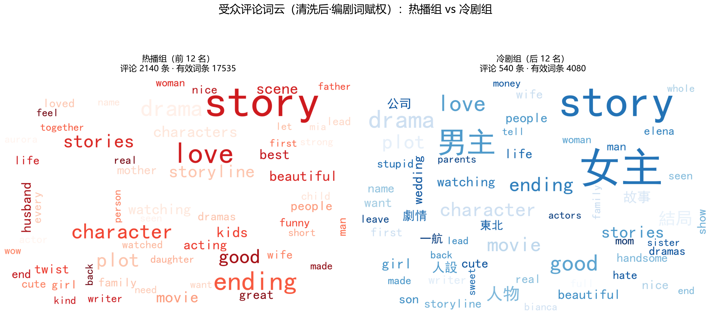
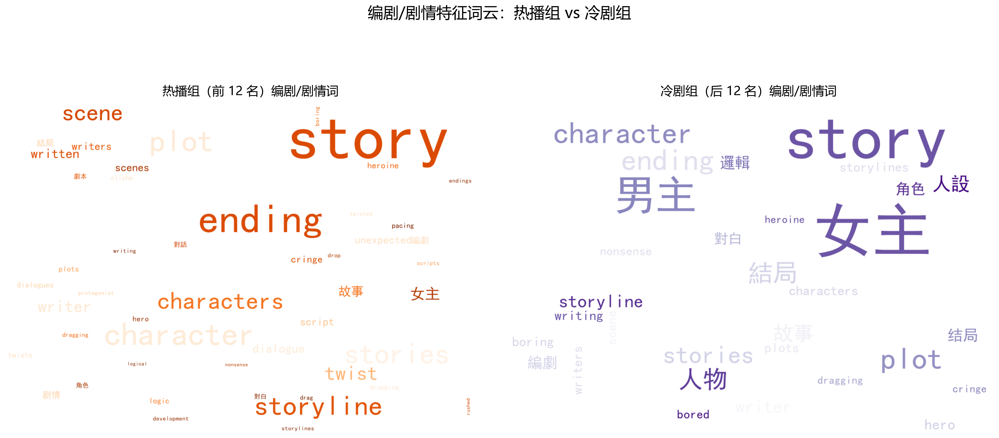
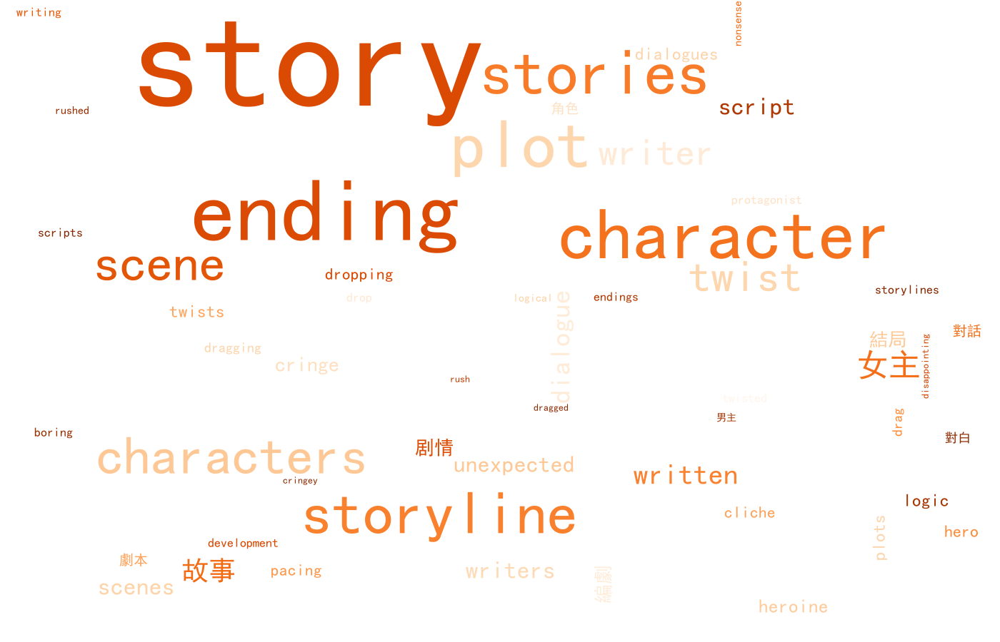
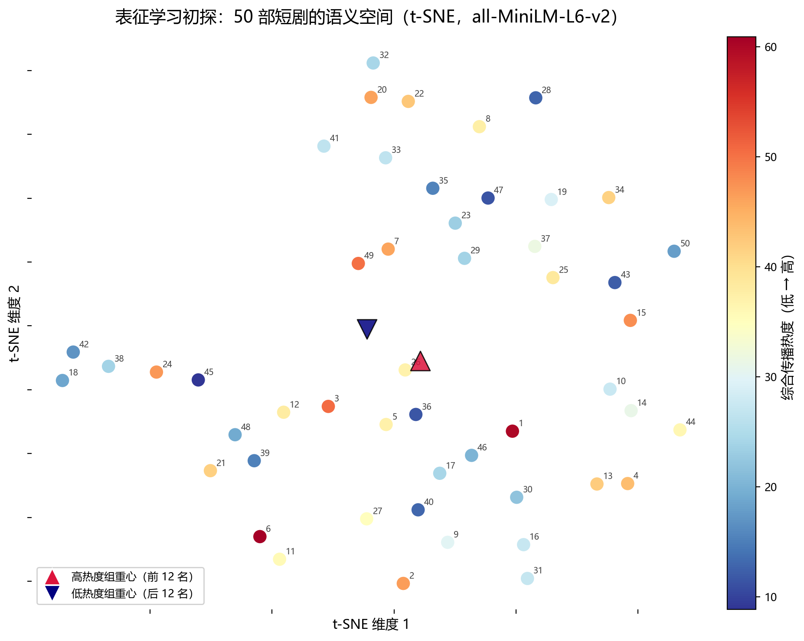
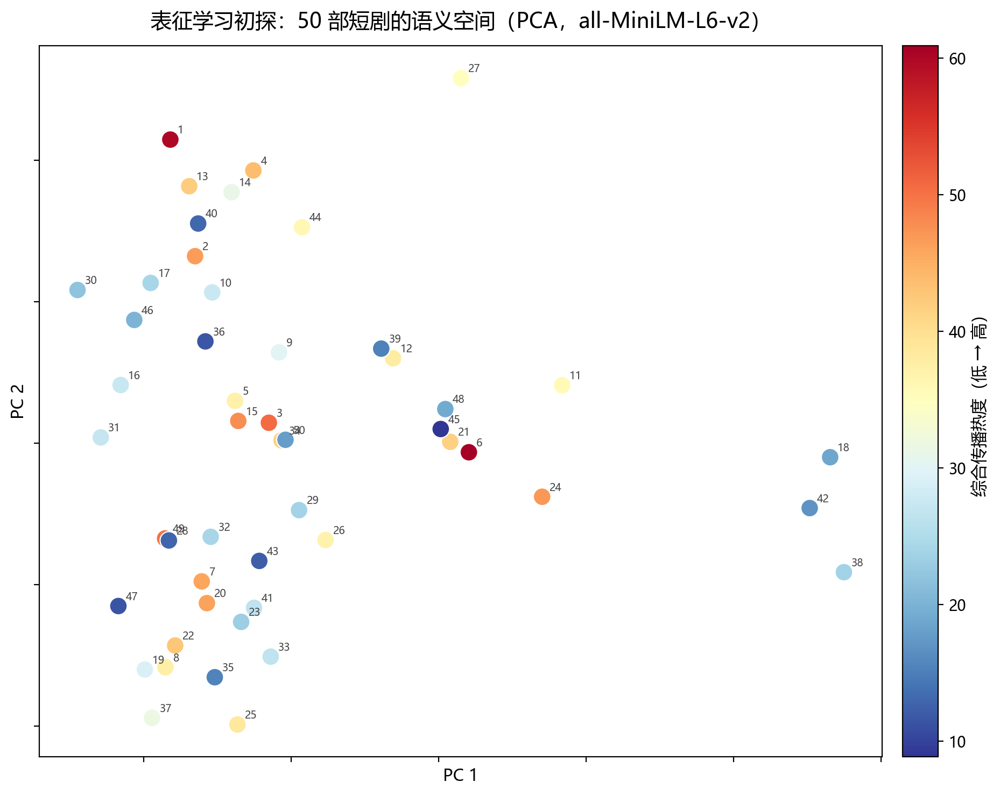

01筛选 · 时空分布 · 剧集档案
用一个筛选框驱动全部图表：按 发布时间、语言、热度分组、剧名 筛选后，本页趋势图、语言对比、档案明细表以及各模块中带 联动 标记的散点图 / 箱线图 / 明细表会实时联动；其余图多为 n=50 全样本统计基线，不随筛选变化。
发布时间趋势
按月统计剧集数量 · 高 / 中 / 低热度分组语言对比
英文 / 中文 · 平均综合热度与平均点赞数 · 点击柱子筛选语言02核心结论
冲突密度分档 · 综合热度均值排序
单位：综合传播热度显著信号词 · p 值排序
单位：Spearman p（虚线为 0.05 阈值）03研究设计与稳健性检验
本页所有相关分析均为观测性统计。综合传播热度由 0.40×播放量(对数标准化) + 0.20×点赞率 + 0.20×评论率 + 0.20×Trends平均热度 合成。下面先交代研究口径，再验证综合热度指标与「有效信号」的可靠性。
本研究为探索性研究（n=50），绝大多数编剧特征未达统计显著（p>0.05）；报告结论反映样本内的方向性趋势，不可作为严格因果推断。仅 insult（侮辱）、pregnant（生子）、情感价值感知 / 情感共同体构建评分、reveal（负向） 等少数特征达到 p<0.05 或边缘显著（0.05≤p<0.10），详见下方「有效分析」。
综合传播热度的稳健性检验
三种独立排名 · 两两 Spearman ρ复合加权与客观熵值法一致性最高（ρ=0.817），三种排名两两显著正相关（ρ 0.54～0.82，p 均 <0.001）→ 综合指标稳健、无需更换。
有效分析：p<0.10 的显著信号
实色=显著(p<0.05) · 淡色=边缘显著04特征重要性 · 随机森林 vs XGBoost
为评估各编剧特征对传播热度的解释力，引入随机森林与XGBoost（两者均加 max_depth=3、min_samples_leaf=2 等防过拟合约束）提取特征重要性并做交叉验证。
随机森林：训练集 R²=0.647，5 折 CV R²=-0.240；XGBoost：训练集 R²≈1.000，5 折 CV R²=-0.327。故特征重要性仅作方向性参考、不作预测结论。值得注意的是，「情感价值感知评分」 在两个模型中一致被列为最重要特征，与相关性结论相互呼应。
特征重要性对比（Top 10）
随机森林 vs XGBoost · 归一化重要性模型得分对比
| 模型 | 训练集 R² | OOB R² | 5折CV R²均值 | CV R²标准差 |
|---|---|---|---|---|
| 随机森林 | 0.647 | -0.040 | -0.240 | 0.306 |
| XGBoost | 1.000 | — | -0.327 | 0.304 |
训练集 R² 远高于交叉验证 R²（且 CV 为负），是典型的过拟合信号：模型「记住」了样本内的个别高值，却无法泛化到新样本。
05数值特征相关性
图表 1 · 15 项数值特征与综合热度 Spearman ρ
按 |ρ| 降序 · 红=正相关 · 蓝=负相关图表 2 · 相关性热力图
特征 × 热度分量 / 特征两两 · Spearman ρ图表 3 · 冲突密度 vs 热度
联动图表 4 · 情节转折密度 vs 热度
联动图表 5 · 大事件频率 vs 热度
联动06高 / 低热度组对比 高组=前25%(12部) · 低组=后25%(12部)
图表 6 · 题材母题占比
高组红 / 低组蓝 · 标注占比差(pp)图表 7 · 叙事结构占比
线性 / 非线性图表 8 · 关键数值特征均值对比
高组 vs 低组 · 数值标签图表 9 · 三维度均值对比
差异标注 +%07细粒度信号词排序 点击柱子可筛选包含该信号词的剧集
图表 10 · 情节点类型 pregnant 显著
图表 11 · 冲突信号词 insult 显著
图表 12 · 大事件信号词 reveal 显著负向
08冲突密度非线性与题材分布
图表 13 · 冲突密度分档热度
低/中/高 · 标注「适度最优」图表 14 · 冲突密度按题材
联动箱线图 · 次/分钟图表 15 · 题材 × 综合热度
联动箱线图 · 综合传播热度09三维度论点验证 互斥维度修正
初版以「冲突密度 / 强钩子 / 侮辱冲突」绘制雷达图，但三者之间存在父子集与语义重叠（冲突密度 ⊇ 侮辱冲突密度）。现按互斥规则重新拆分为三个无重叠维度：A 情感关系转折钩子、B 负面言语冲突、C 悬疑动作冲突，以正例 R2 / R7 / R22（高热度）与反例 R18 / R42 / R45（低热度）做分组柱状图与平行坐标对比。
正 / 反例分组对比（互斥三维度）
红=高热度正例 · 蓝=低热度反例平行坐标（互斥三维度）
红线=正例 · 蓝线=反例三个维度相互独立、不含包含关系：A 关注情感关系的转折 / 钩子密度，B 关注侮辱、谎言、揭穿等负面言语冲突，C 关注悬疑与动作类冲突。高热度正例（R2 / R7 / R22）在三轴上普遍显著高于低热度反例（R18 / R42 / R45），后者几乎在三轴趋近 0——即高热度剧更「冲突密集、钩子密集」，低热度剧相对平淡（方向性趋势，n=50 探索性结论）。
10情感叙事维度 新增：情感基调 · 情感共同体构建 · 情感价值感知
在原有 8 维编剧特征之外新增 3 个情感叙事维度（已剔除参考价值较低的享乐动机 / 品牌与IP效应 / 价值观表达）。情感价值感知（ρ=0.356，p=0.011）与情感共同体构建（ρ=0.286，p=0.044）是 50 部样本中仅有的两个显著预测因子（p<0.05），均呈正向：情感评分越高，综合传播热度越高。
情感基调主标签分布
按高/中/低热度分组堆叠 · 全样本基线 n=50情感共同体构建评分 vs 综合热度
联动ρ=0.286 · p=0.044 · 正向显著情感价值感知评分 vs 综合热度
联动ρ=0.356 · p=0.011 · 正向显著11受众评论词云 质性佐证
按综合传播热度降序取前 12 名（热播组）与后 12 名（冷剧组）的观众评论，先做噪音清洗——删除<3 词的纯情绪短评、含 subscribe / channel / follow / t.me 等引流词的评论、纯表情/符号评论，以及与完全相同文本出现>5 次的水军复制评论——再对编剧/剧情专属词库（plot、story、twist、script、ending、logic、character、boring、drop 等）按 3–5 倍频次赋权，从而凸显「涉及编剧、剧情」的真实反馈，而非 love / good / wow 这类大白话。共剔除 319 条（10.64%）噪音评论：热播组原始 2,303 → 保留 2,140 条；冷剧组原始 696 → 保留 540 条。
热播组 vs 冷剧组 · 并排总词云（编剧词赋权）
暖色=热播组 · 冷色=冷剧组 · 点击放大
热播组总词云
暖色调 · 编剧词赋权 · 点击放大冷剧组总词云
冷色调 · 编剧词赋权 · 点击放大编剧 / 剧情专属词云（仅保留编剧·剧情词）
过滤 love / good / wow 等无关词 · 暖=热播组 · 紫=冷剧组
热播组 · 编剧/剧情词
暖橙色调 · 仅保留剧情·编剧·人物·结局等词
冷剧组 · 编剧/剧情词
紫色调 · 仅保留剧情·编剧·人物·结局等词编剧 / 剧情相关关键词 · 组间对比
每万词频次 · 热/冷比 >1.2 标红、<0.5 标蓝编剧 / 剧情词汇 Top 20 · 频次对比
清洗后原始频次（未赋权）· 左=热播组 · 右=冷剧组| # | 热播组词汇 | 频次 | 每万词 |
|---|---|---|---|
| 1 | story | 241 | 137.44 |
| 2 | ending | 62 | 35.36 |
| 3 | character | 39 | 22.24 |
| 4 | plot | 35 | 19.96 |
| 5 | stories | 31 | 17.68 |
| 6 | storyline | 27 | 15.40 |
| 7 | characters | 21 | 11.98 |
| 8 | scene | 20 | 11.41 |
| 9 | twist | 14 | 7.98 |
| 10 | writer | 10 | 5.70 |
| 11 | 女主 | 10 | 5.70 |
| 12 | written | 7 | 3.99 |
| 13 | unexpected | 6 | 3.42 |
| 14 | cringe | 5 | 2.85 |
| 15 | dialogue | 5 | 2.85 |
| 16 | heroine | 4 | 2.28 |
| 17 | scenes | 4 | 2.28 |
| 18 | script | 4 | 2.28 |
| 19 | writers | 4 | 2.28 |
| 20 | 故事 | 4 | 2.28 |
| # | 冷剧组词汇 | 频次 | 每万词 |
|---|---|---|---|
| 1 | 女主 | 44 | 107.84 |
| 2 | story | 38 | 93.14 |
| 3 | 男主 | 17 | 41.67 |
| 4 | character | 6 | 14.71 |
| 5 | ending | 6 | 14.71 |
| 6 | plot | 6 | 14.71 |
| 7 | stories | 4 | 9.80 |
| 8 | 人物 | 3 | 7.35 |
| 9 | 人設 | 3 | 7.35 |
| 10 | 結局 | 3 | 7.35 |
| 11 | hero | 2 | 4.90 |
| 12 | storyline | 2 | 4.90 |
| 13 | writer | 2 | 4.90 |
| 14 | 故事 | 2 | 4.90 |
| 15 | bored | 1 | 2.45 |
| 16 | boring | 1 | 2.45 |
| 17 | characters | 1 | 2.45 |
| 18 | cringe | 1 | 2.45 |
| 19 | dragging | 1 | 2.45 |
| 20 | heroine | 1 | 2.45 |
热播组观众更频繁使用剧情/结构类词评价：story（241 次）、ending（62）、plot（35）、twist（14）、writer（10），讨论重心落在「情节推进、结局反转与编剧功力」；冷剧组则更多停留在人物/角色层面：女主（44）、男主（17）、character（6），而 story 仅 38 次（约为热播组的 1/6），剧情讨论密度明显偏低。需说明：boring / drop 类弃剧负面词在两组都很少（boring 各 1 次、drop 为 0 次），不足以支撑「冷剧=无聊弃剧」的表述，故本报告不据此下结论，仅呈现可观察的高频词差异。
12高维语义空间初探 表征学习探索
在浅层词频特征之上，尝试引入高维语义表征：用 all-MiniLM-L6-v2 将 50 部短剧文本编码为 384 维向量，再经 t-SNE / PCA 降至二维，观察高热度剧是否在语义空间形成聚集。
50 部短剧 · 二维投影散点
颜色=综合传播热度（蓝冷 → 红热）· 悬停查看剧名 / 排名 / 热度 · 按钮可切换 t-SNE / PCA 投影
t-SNE 投影
点击放大
PCA 投影
点击放大
高 / 低热度组重心存在一定分离趋势（组间重心距离 5.01），但组内离散度（高组 15.83、低组 17.48）均明显大于组间距离，未形成清晰聚集簇；综合热度与两个 t-SNE 轴的 Spearman 相关亦不显著（ρ≈0.01 / −0.11，p>0.45）。说明「热度的语义信号」可能藏在更深层、更领域化的结构中，需引入编剧领域知识进一步特征化。
13剧集明细排序表
14数据口径与局限
展开数据口径与局限（可折叠）
- 样本 n=50 部 YouTube 热门短剧；有效数值特征样本约 50。
- 46/50 部含全片字幕，4 部仅覆盖前 5 分钟样本。
- TMDB / IMDb / TVmaze 交叉认证匹配率低，权威匹配多缺失。
- 叙事结构、题材母题、戏剧性需求等定性维度多为启发式判定。
- Google Trends 12/50 部无数据，综合热度中的 Google Trends 分量按剩余权重比例放大后归一。
- 信号词词库为启发式词库，中英混合内容做繁简归一与双语双词库匹配。
- 「筛选 · 时空分布 · 剧集档案」的频道 / 语言 / 发布时间 / 点赞 / 评论等元数据来自 youtube_short_dramas.csv（点赞数、评论数为 YouTube 当前快照）。
- 相关性为观测性统计，非因果结论。
本研究现有特征基于浅层词频统计；后续可引入表征学习（BERT 等编码器），将文本映射至高维隐空间寻找更深层语义结构（见「高维语义空间初探」）。此外，特征工程还需引入专业编剧领域知识，通过与编剧的深度访谈，把感性的创作经验转化为可计算的结构化特征。